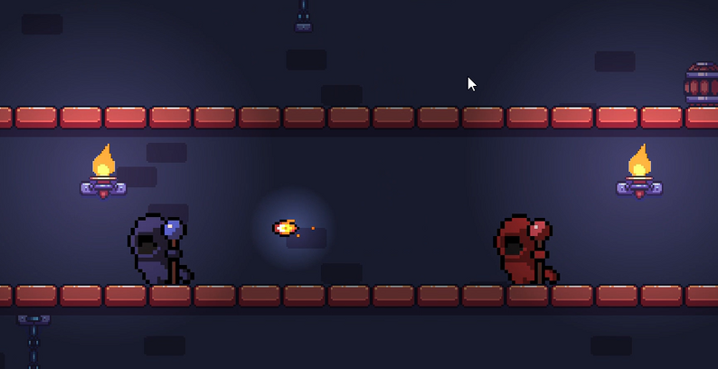
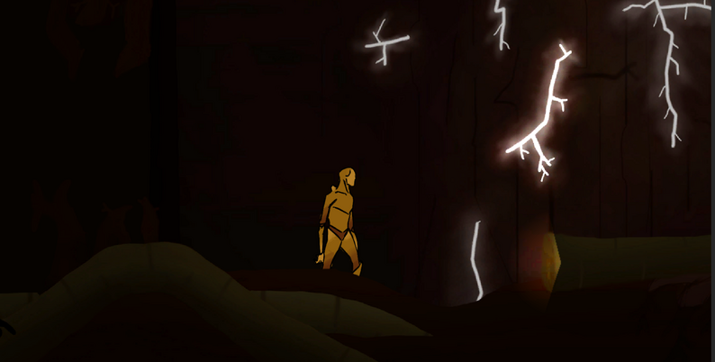
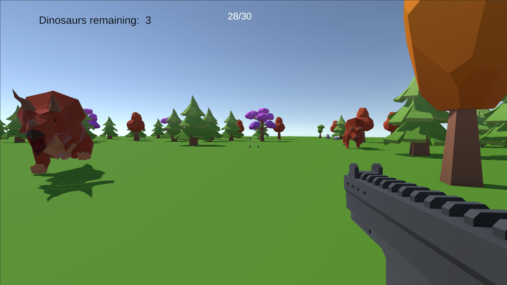
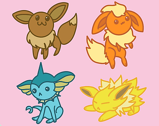
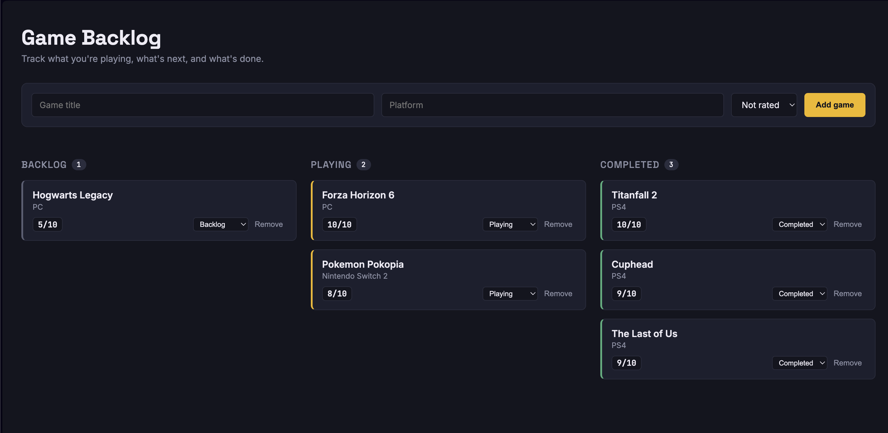
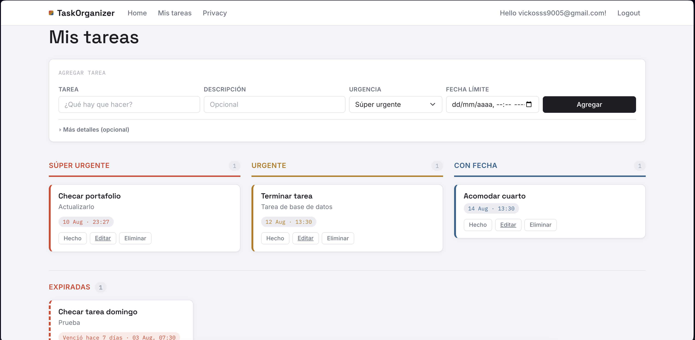

Victor Sanchez
About me
Hi, I'm Victor — you'll also find me online as PsykoRaccoon. I'm a software developer based in Mexico City, currently finishing my degree in Game Development at Amerike University. My strongest languages are C#, HTML, CSS and JavaScript, and I can comfortably read and write C++ as well. Games are what got me into programming in the first place — I've been playing since I was 4, and building my own taught me how to actually think in code instead of just copying it. Lately I've been branching out: building web projects, and brushing up on C++ and picking up Python, so this portfolio isn't just about games anymore.
Skills
Core
- C#
- HTML5
- CSS3
- JavaScript
Backend
- ASP.NET Core
- Razor Pages
- REST APIs
- ASP.NET Identity
Databases
- EF Core
- SQL Server
- PostgreSQL
Tools & deployment
- Azure
- Docker
- Git
Solid, brushing up
- C++
Currently learning
- Python
My games
Throughout my career, I've done many games. I focus mainly on the logic of the code, I love solving bugs, implementing new mechanics, AI. Even though most of these games were made in a team, my work has mainly been that.
Wizarding Fight: This game is completely made by me, i made everything from scratch (except the srpites). A simple local multiplayer in progress, where you and a friend have to fight each other, best of 10 wins.

Bodhi: My first game made for a Global Game Jam, me and 3 other friends worked here and I focused on the movement, menus, game flow and mechanics.

Dino Riot: This game was made by me and other 3 friends as well, here I made the AI for the dinosaurs, the gun, the mechanics, the logic behind the game, bugs and the game flow.

Chibi Frenzy: This game was made by me and only one other friend, again, I focused on the logic, the rythm, the game flow and bugs.

Tower Frenzy: Made by me and my 3 best friends, this was our first VR game, this was a class project and we couldn't distribute it but we finished. Again, I focused here on AI, game flow, logic, mechanics and the map
Projects
Not everything I build is a game. These are the web and backend projects I've been working on lately, where I get to focus on data, APIs and how the pieces talk to each other.
Game Backlog API
A REST API to keep track of a personal game backlog — what I want to play, what I'm playing and what I already finished. I built the schema code-first with EF Core migrations, wired the database context through dependency injection, and exposed full CRUD over REST, with a small board on top to actually see the backlog.
- C#
- ASP.NET Core
- EF Core
- PostgreSQL
- Docker

Task Organizer
A task manager with user accounts, where each person only ever sees their own board. The part I like most is that tasks re-sort themselves: you pick an urgency when you create one, but as the deadline gets closer the task climbs on its own into Urgent and then Super urgent — the urgency you chose only acts as a floor, it never drops. It's deployed and running on Azure with ASP.NET Core Identity handling registration and login. (Please, if you want to see it in action, give the page a moment to load as it is hosted on a free tier of Azure and it has to fire up first — feel free to create an account!)
- C#
- ASP.NET Core
- Razor Pages
- EF Core
- SQL Server
- Azure

Experience
The majority of my experience in game development comes from my school projects, but recently I worked in a Mexican company as an intern, in that company, I only focused on solving bugs and implementing new mechanics to their games.